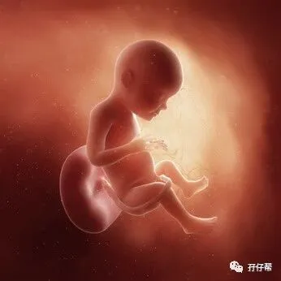
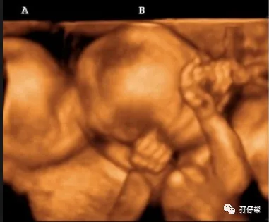

文|圆圈妈，一个文思如尿崩的双胎妈妈
图|来自网络，如有侵权，请联系删除
· 正 · 文 · 来 · 啦 ·
【01】两胎儿的发育情况
孕28周的胎宝宝，有小哈密瓜那么大了，从头部到臀部长约35.9CM ，约1100G:
孕28周的双胞胎胎儿发育图：
B超孕28周的双胞胎胎儿影像图：
【02】圆圈妈的孕期回忆录
终于迎来28周！
这是我们娘仨约定的第一个目标！终于实现了！
孕28周，意味着我的双胎妊娠过去了三分之二，到这周的末尾，我将正式进入晚孕期！
太不容易了！忍不住为自己鼓掌！
如果此时发现两胎儿有异常，生出来能活下来的几率还是挺大的！
ANYWAY，这种负能量信息还是不要想那么多了，两宝宝即便存活了，后期的治疗费用也将是一笔庞大的天文数字。
Ⅰ 第六次产检
28W+3D，双胎妊娠的第六次产检。
约了周医生，她对我的孕育情况已经了如指掌了，果断开单做B超。
我反馈了下腹部发紧发硬和阴道分泌物增多的情况，她又给我开了做胎监的单子和内检。
拿单去做胎监的时被护士质疑开错单，理由是孕30周才做胎监，最后找周医生再三确认后才给我安排。
Ⅱ 我的第一次胎监
做胎监好像进入纳粹党的集中营，求生不得求死不能。
我第一次做胎监，很狼狈。
没有经验的双胎孕妇遇上同样没有经验的实习护士，真是糟糕透了。
正常情况需平躺20分钟，如果两胎儿不配合可能需要30分钟，甚至60分钟以上…而且全程不能乱动，不能换姿势，挠下痒痒都要考虑下会不会惊动到探头下的胎宝宝，免得把他们吓跑了，又得重新来一遍。
在护士的要求下，我规规矩矩地躺下，费了好大劲，才找到一个舒服的姿势。
跟其他孕妇一样，身上也被绑着探头，不同的是，我需要两个探头，一左一右。
护士估计没经验，好久都没找到胎心，还一个劲地问我，他们的胎心在哪里。
平躺着，腰身好酸疼啊，好不容易找到，居然因为探头没绑好，又要重新来一遍，真是欲哭无泪啊。
折腾了许久，终于找到胎心位置，护士用4根绑带将仪器固定在我肚子上，并让我有胎动的时候，就按下手中的按钮记录。
这又难倒我了，我不知道怎样才叫胎动，发紧发硬也算胎动吗？而且就算动了也不知道哪个在动。
天啊，谁来告诉这是几个意思啊！
十分钟过后，护士过来询问我，这么久还没有胎动吗？如果这次做不成功，就要重新再来一遍。
我被这个“重新再来一遍”吓得直哆嗦，我不想再来一遍啊！
在后面的十五分钟，我不管有没有胎动，凭自己感觉，胡乱按着手中的按钮。
30分钟后护士把探头解开时，我已经无法动弹了，老腰酸疼得好像刚经历过腰斩还没缝合好似的。
☞☞TIPS☜☜： 胎监就是胎心监护（NST），一般在35-36周开始做胎监，若情况特殊，有些双胎妈妈在28周就需要做胎心监护。
通常，NST需要做20分钟，正常情况下胎心率为110-160bpm，基线变异6-25 bpm，在20分钟内如果有2次以上的胎心加速，加速超过基线15秒，持续超过15秒，就算是NST有反应。
如果不达标的话，需要再做20分钟，在增加的20分钟之内如果达到以上的标准，也算是有反应。
如果是孕周≤32周，胎动后胎心率加速要超过基线10秒，持续超过10秒。
来源：段涛大夫《怀孕生孩子那些事 之 胎心监护》
Ⅲ 第四次B超
这次B超不计入生育保险报销范围，只能自费，双胎彩超交了双份钱。
这是双胎妊娠的第四次B超，上次B 超还是孕23周四维大排畸，掐指一算，已经过去一个多月了。
因此，这次做B超内心异常忐忑！
每次做B超就有一种要赴死的悲壮感，总是很惊悚地盯着医生看，竖着耳朵听，只要医生一说话，我就直哆嗦。
“做四维了吗？”
“做了，在北大医院做的！”
“都正常吗？把单子拿来看看！”
“嗯，单子在我老公那，我去拿”
“不用，等下给我就行，两胎儿现在已经很难看清轮廓了，这次就不给你做形态结构筛查了。”
“哦…我的胎盘之前低置，现在怎样了！”
“谁说低置了，好着呢！”
听说胎盘涨上去了，长舒一口气。
拿到B超单的时候，我第一时间赶紧看两胎儿的孕周和体重差，还好孕周相差1天，体重相差6%，F1胎儿2.8斤，F2胎儿2.4斤。
我第一反应就想问候下双输！
去你大爷的TTTs，瞧这B超数据，杠杠的！老娘应该没有机会看到你了吧！
我雄赳赳地在心理暗自窃喜着！
但是革命尚未成功，还不能掉以轻心，我马上又认怂地心里默念“阿弥陀佛，善哉！善哉！”
Ⅳ 第一次做内检
我的内检结果出来了，清洁度3级，意思是有炎症，
但是我在乎的不是结果而是大着肚子做内检这个过程。
心里有好几千万只草泥马奔腾而过...
那么高的架台，挺着巨肚爬上去，还要脱掉半边裤子，敞开双腿，然后做好受辱的心理准备（对不起，我好像想到什么了….）
我知道医生一点都不CARE，可是依然少女心的我很CARE！
医生给我开了外用药硝酸咪康唑栓，是一种阴道内塞栓，这种栓剂是塞到阴道上，不用口服。
看说明书挺简单的，把栓剂放在阴道深处即可，每晚1次，一次1枚。连续7天为一疗程。
可是我不知道“何为阴道深处”，到底要塞到哪里才稳妥，万一担心操作不当，把本来就很短的宫颈管给捅破了怎么办？
我相信像我这样粗鲁的女人，一定可以干出这样的事情。
我看了些科普文章，孕期分泌物增多是因为黄体素的分泌量上升，这是正常现象，如果没有其他异常，就不用过度担心。
我觉得我除了分泌物增多，并没有其他异常，最后私自把这个栓剂压箱底。
☞☞TIPS☜☜： 若发现阴道分泌物异常，需尽快找医生做内检，检查下清洁度，酌情用药。
其实，医生根据孕妇的情况科学用药，还是安全可靠的，不必讳疾忌医。
毕竟，妇科炎症可大可小，若是严重不加以干预，可能会诱发早产。
判别分泌物异常的方法：
1.突然增加：虽然怀孕时分泌物变多，但都属于稳定的状况；如果某段时间突然大量增加，就要有所警觉。
2.奇怪颜色：一般是无色状态，如果出现黄绿色、铁锈色等没见过的颜色，要小心。
3.难闻气味：一般是无味的情况，如果有明显难闻的臭味，留意是否有感染迹象。
4.异常质地：如果黏稠状况特殊，甚至还感觉到搔痒，建议就诊检查。
Ⅴ 第一次被扣下住院
综合其他化验报告单，医生二话没说，开住院单让我住院观察。
理由如下：宫颈管长度只有31MM，胎监提示有宫缩迹象，贫血持续加重，阴道炎。
我毫不犹豫拒绝了！理由如下：
第一：医院环境，我很确定我会住不惯，会挑床，如果吃喝睡不能做到，一切保胎计划都是瞎说！
第二：没人手，我一个大肚婆在医院行动不便，肯定需要人在旁照顾，所有亲戚朋友找了个遍，没有合适的人选可以暂时征用。
第三：我真的有必要那么早就住院了吗？贫血，并不是住院就可以纠正的，轻微宫缩，我觉得还好，发紧发硬的现象确实有，但频率不高。
宫颈短，如果住院了也是卧床，那我还是睡自己的床舒服！
除此之外，我自我感觉良好，觉得自己还行，还没到非要住院的地步。
总之，我不想住院！
医生无奈，只好叮嘱我少走动，勤数胎动，每隔两周一次产检和一次B超，有情况马上去医院。
☞☞TIPS☜☜：宫颈管过短会增加早产的风险，经阴道宫颈长度测量也可用于预测双胎妊娠早产的发生，多数学者认为妊娠18-24周双胎妊娠宫颈长度小于25mm是预测早产最好的指标，国内多数学者在妊娠18-24周行超声结构筛查同时测量宫颈长度。来源：段涛大夫《怀孕生孩子那些事 之 双胎（2）》
建议每次B超一定要额外要求医生测下宫颈，因为有些医院并不会无缘无故给孕妇做这项，所以你得留点心，提醒医生，哪怕是加钱做也没关系，总之要动态观察这个数据。
就酱…就酱…我的双胎妊娠第六次产检，踩着临界值，顺利过关！
☞未完待续☜
上期推文:
连载（一）|圆圈妈双胞胎怀孕过程第4周
连载（二）|圆圈妈双胞胎怀孕过程第5周
连载（三）|圆圈妈双胞胎怀孕过程第6周
连载（四）|圆圈妈双胞胎怀孕过程第7周
连载（五）|圆圈妈双胞胎怀孕过程第8周
连载（六）|圆圈妈双胞胎怀孕过程第9周
连载（七）|圆圈妈双胞胎怀孕过程第10周
连载（八）|圆圈妈双胞胎怀孕过程第11周
连载（九）|圆圈妈双胞胎怀孕过程第12周
连载（十）|圆圈妈双胞胎怀孕过程第13周
连载（十一）|圆圈妈双胞胎怀孕过程第14周
连载（十二）|圆圈妈双胞胎怀孕过程第15周
连载（十三）|圆圈妈双胞胎怀孕过程第16周
连载（十四）|圆圈妈双胞胎怀孕过程第17周
连载（十五）|圆圈妈双胞胎怀孕过程第18周
连载（十六）|圆圈妈双胞胎怀孕过程第19周
连载（十七）|圆圈妈双胞胎怀孕过程第20周
连载（十八）|圆圈妈双胞胎怀孕过程第21周
连载（十九）|圆圈妈双胞胎怀孕过程第22周
连载（二十）|圆圈妈双胞胎怀孕过程第23周
连载（二十一）|圆圈妈双胞胎怀孕过程第24周
连载（二十二）|圆圈妈双胞胎怀孕过程第25周
连载（二十三）|圆圈妈双胞胎怀孕过程第26周
连载（二十四）|圆圈妈双胞胎怀孕过程第27周
下期预告：
连载（二十六）|圆圈妈双胞胎怀孕过程第29周
-END-
重磅互动
#你希望写什么育儿经验干货？#
评论区聊一聊
随便提，万一下篇就写了呢？
关于这个号
谢谢关注！
我是圆圈妈
85后，全职妈妈
家有孖仔两枚，圆圈&圈圈
双胞胎育儿公众号：孖仔帮
ID:twinsbang
旨意分享双胞胎育儿经验帮助双胞胎家庭
有经验可循
有组织可靠
希望我的经验对您有所启发
期待与您一起共享双胞胎育儿经
孖仔帮目前有6个双胞胎微信社群
孕期群，喂养群，闲置群
爸爸群，教育群
深圳双胎同城群
如需入交流群
添加微信号sgguy-com
或扫描下方二维码⬇⬇
申请入群
入群暗号：双胎宝妈/宝爸，孕期/已生
往期回顾
105：同卵双胞胎的天敌--双胞胎输血综合征
106：官宣：双绒双羊，单绒双羊，单绒单羊傻傻分不清？一篇消除你所有疑问
215：双胎子宫日记系列|（下）你看不看？双胞胎妈妈直播剖腹产全过程
306：真人示范！双胞胎妈妈高难度喂母乳技巧
312：为出生就进NICU的双胞胎新生儿，我必须告诉你这5个通关秘籍
407：嘿！双胞胎孩子的亲子阅读攻略，要来一份吗（1--2岁阶段）
605：看过这份最简单的双胞胎宝宝用品囤货清单，其他的都是将就
608：听说...你在找双胞胎育儿神器，这事儿我熟！
723：双胎妈妈，为什么我不建议你这样坐月子...
⬇⬇长按下方二维码，关注孖仔帮
回复文章编号数字即可阅读
更多养育双胞胎知识，尽在双胞胎育儿网站
请猛戳 "阅读原文"
或长按下方二维码直达⬇⬇
点击“阅读全文”，直达双胞胎育儿网站

